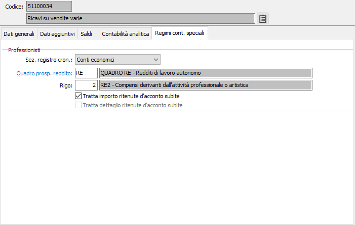
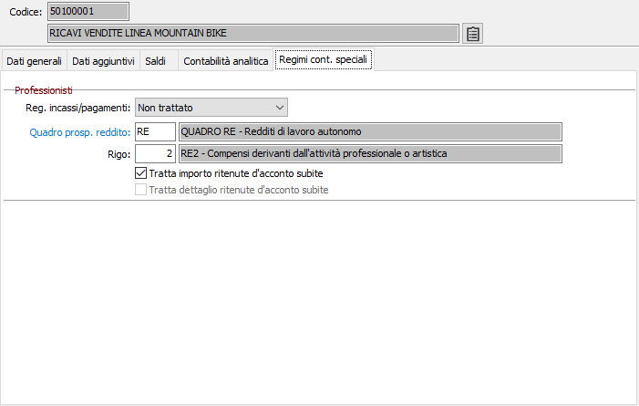
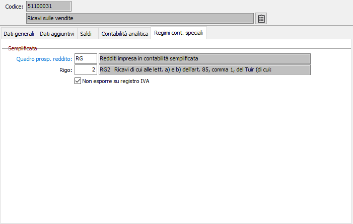
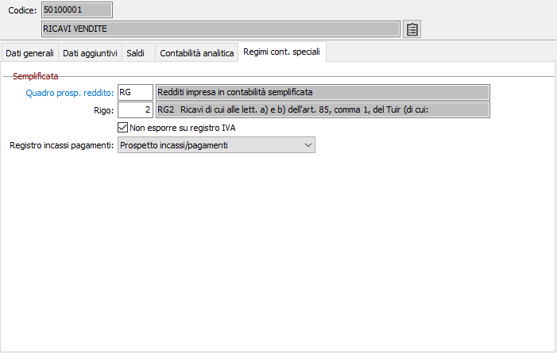

Regimi contabilità speciali
La linguetta Regimi contabilità speciali viene visualizzata solo in presenza del modulo Contabilità speciali. In questa sezione vengono riportati i dati necessari all'utilizzo del sottoconto; i dati mostrati cambiano in base al tipo di contabilità presente.
Professionisti con registro cronologico

SEZIONE REGISTRO CRONOLOGICO: Combo box per definire la sezione del registro cronologico in cui devono essere allocati gli importi relativi al sottoconto in esame. Valori ammessi: Nessuno; Conti finanziari; Conti economici; Altri conti.
QUADRO PROSPETTO REDDITO: codice alfanumerico di 3 caratteri per indicare il quadro del Prospetto del reddito in cui il saldo del conto in esame deve essere riepilogato. Sul campo sono attive le funzioni di ricerca (F9) e manutenzione (CTRL+W) sulla tabella stessa.
RIGO: codice numerico di 3 caratteri, correlato al valore del campo precedente, per indicare il rigo del Prospetto del reddito in cui il saldo del conto in esame deve essere riepilogato.
TRATTA IMPORTO RITENUTE D'ACCONTO SUBITE: check box significativo sui conti di ricavo per prestazioni e onorari. Se attivo, all’atto della registrazione di “ricavi sospesi” (fatture da incassare) verrà richiesta l’indicazione dell’importo di ritenuta d’acconto relativa al ricavo in questione.
TRATTA DETTAGLIO RITENUTE D'ACCONTO SUBITE: check box significativo solo sui conti patrimoniali che registrano le ritenute d’acconto subite da parte dei clienti. La spunta determina e governa il programma Lista certificazioni da ricevere.
Professionisti con registro incassi/pagamenti

REG. INCASSI/PAGAMENTI: Combo box per definire se il sottoconto deve essere incluso nel registro incassi/pagamenti. Valori ammessi: Non trattato, trattato.
Semplificata o semplificata per cassa sintetica

NON ESPORRE SU REGISTRO IVA: se spuntato il sottoconto non comparirà nella stampa del registro Iva.
Semplificata per cassa analitica

REGISTRO INCASSI PAGAMENTI: Combo box per definire se il sottoconto deve essere incluso nel registro incassi/pagamenti ed in quale sezione. Valori ammessi: Non trattato, Prospetto incassi/pagamenti o Prospetto altri componenti di reddito.